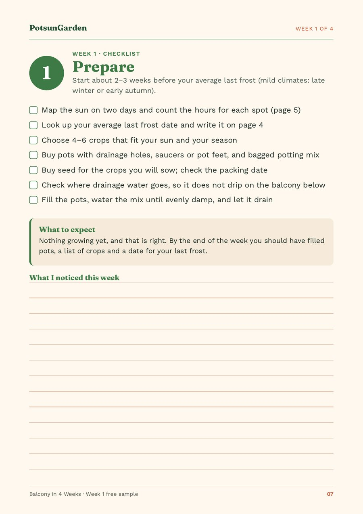

Container gardening for beginners: your first 7 days
In your first 7 days of container gardening you sow nothing. You watch the sun on two days, find your average last frost date, choose four to six crops, buy pots, potting mix and seed, check weight and drainage, and fill and water your pots: one small task a day. In temperate and cold-winter climates, start about two to three weeks before your average last spring frost. Most balcony problems start before the first seed, with the wrong spot, the wrong pot or the wrong time.
Quick facts
| When to start | About 2–3 weeks before your average last spring frost (temperate and cold-winter climates) |
|---|---|
| Sun check | Two days, at about 8 am, 10 am, 12 pm, 2 pm, 4 pm and 6 pm; count direct sun only |
| Sun scale | 6+ hours: cherry tomato, chilli, basil, dwarf beans · 4–6 hours: radish, peas, lettuce, rocket, spinach, herbs · 3–4 hours: lettuce, rocket, spinach, parsley, chives, mint · under 3 hours: mint, chives, parsley (slowly); pea shoots and microgreens on a windowsill |
| How many crops | Four to six |
| Tender plants | Tomatoes and basil wait 1–2 weeks after the average last frost |
| Filling pots | Fill to 2–3 cm (1 in) below the rim and water the mix until evenly damp |
| Weight | A wet 30-litre pot can weigh 20 kg (45 lb) or more |
| Timing | After 4 weeks: microgreens, thinnings and herbs; radishes and first salad leaves from about week 6; peas and cherry tomatoes from about week 10 to 14 |
When should you start?
In temperate and cold-winter climates, start this week about two to three weeks before your average last spring frost. That way you are ready to sow cool crops in week 2. Colorado State University Extension puts hardy crops such as lettuce, peas, radish and spinach as early as 2–4 weeks before the average last frost, and frost-tender crops later.
In mild-winter climates (frost rare or light), start in late winter for a spring crop, or in early autumn, when cool-season crops grow best.
Day 1: Watch the sun (first day)
List every spot where a pot could stand. Check each one at about 8 am, 10 am, 12 pm, 2 pm, 4 pm and 6 pm, and note direct sun, part sun or shade. Count only direct sun on the spot itself, not on the wall above it. Our guide to balcony sun hours explains how.
Day 2: Watch the sun again, and find your frost date
Repeat the sun check on a second day and add up the hours for each spot. Then look up your average last spring frost date for your town: in the US, use a frost-date tool based on NOAA climate data or your state's Cooperative Extension; in the UK, the Met Office or RHS; in Australia, the Bureau of Meteorology; elsewhere, your national weather service.
An average date is not a safe date. In about one year in two there is a frost after it, so tender plants such as tomatoes and basil wait one to two weeks longer.
Day 3: Choose four to six crops
Pick crops that fit your sun and your season, and stop at six. A few pots you look at every day do better than a crowded balcony.
- Sunny (6+ hours): cherry tomato, chilli, basil, dwarf beans.
- 4–6 hours: radish, peas, lettuce, rocket, spinach, herbs.
- 3–4 hours: lettuce, rocket, spinach, parsley, chives, mint.
- Under 3 hours: mint, chives, parsley (slowly); pea shoots and microgreens on a windowsill.
Day 4: What pots and potting mix do you need?
Buy pots only for the crops you chose, using the pot size chart. Every pot needs drainage holes. Add saucers or pot feet.
Buy bagged potting mix, not garden soil. In the UK the bag says "multi-purpose compost"; in the US, "potting mix" or "container mix". Peat-free is fine. Garden soil packs down in a pot, drains badly and can bring weeds, pests and disease. You do not need gravel in the bottom of the pots.
Day 5: Buy seed
Buy seed for the crops you will sow, and check the packing date: you want seed packed for this year. Tomatoes, chillies and most herbs are easier bought as young plants, but wait to buy those until it is warm enough to plant them out.
Two other things are worth getting now: a watering can with a fine rose (sprinkler head) for seeds, and labels with a pencil, which does not fade in the sun.
Day 6: Check weight and drainage
Before you fill anything, check where drainage water will go, so it does not drip onto the balcony below. Remember that wet mix is heavy: a 30-litre pot can weigh 20 kg (45 lb) or more. Put big pots close to the wall, check your lease or building rules, and fit railing planters on the inside of the railing with proper brackets.
Day 7: Fill the pots and water the mix
Fill each pot to 2–3 cm (1 in) below the rim, so water soaks in instead of running off. Water the mix until it is evenly damp and let it drain. Dry mix sheds water at first, and seeds sown into it sit dry, so doing this now makes sowing day quick.
What should you have at the end of the week?
Nothing is growing yet, and that is right. By the end of the week you should have:
- filled, damp pots in the right spots,
- a short list of crops that suit your light, and
- a date for your last frost.
Next comes sowing: cool crops such as radish, rocket, lettuce, spinach and peas first, and warm crops only once your nights are warm enough. Be honest with yourself about timing too. Four weeks after you start you will be eating microgreens, thinnings and herbs; radishes and the first salad leaves follow from about week 6, and peas and cherry tomatoes from about week 10 to 14.

Frequently asked questions
What do I need to start container gardening on a balcony?
Pots with drainage holes, saucers or pot feet, bagged potting mix (not garden soil), seed for 4–6 crops, a watering can with a fine rose, and labels with a pencil. Young plants of tomato, chilli and herbs can wait until it is warm enough to plant them.
When should a beginner start a balcony vegetable garden?
In temperate and cold-winter climates, start preparing about 2–3 weeks before your average last spring frost. In mild-winter climates, start in late winter or early autumn.
Can I use garden soil in pots?
No. Garden soil packs down in a pot, drains badly and can bring weeds, pests and disease. Use bagged potting mix, sold in the UK as multi-purpose compost.
How many plants should a beginner grow?
Four to six crops. A few pots you check every day do better than a crowded balcony, and you learn more from each one.
Why not sow seeds in the first week?
Because most problems come from the wrong spot, pot or timing. Spending a week measuring sun, finding your frost date and setting up pots means sowing in week 2 is quick and goes into the right conditions.
Sources
Figures come from our guide Balcony in 4 Weeks (2nd edition) and the free Week 1 PDF unless a source below is named in the text. Sources checked on 18 October 2026.